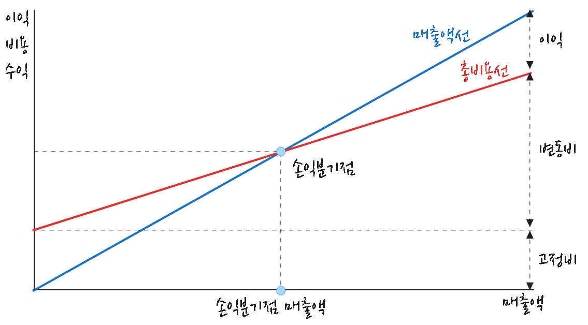

사업성분석
사업성 분석, 손익분기점, BSC, CSF
손익분기점
손익분기점(Break Even Point)이란 총 매출과 이를 위해 지출된 총 비용이 일치되는 매출액을 의미한다. 즉, 일정기간 매출액이 그 기간에 지출된 비용과 같아서 이익도 손실도 발생하지 않는(이익 금액 - 손실 금액 = 0) 지점을 가리킨다. 손익분기점분석은 조업도 변동에 따라 수익과 비용 변동 상황을 나타냄으로써 기업 채산성 파악을 위한 중요한 수단이 됨은 물론 장래 경영 계획과 통제 수잔으로 널리 이용되고 있다.

\[ 손익분기점 \ 매출액 \ = \ \frac{고정비}{1 \ - \ \frac{변동비}{매출액}} \]
손익분기점률은 손익분기점에서 매출액과 이미 실현된 매출액 간 비율로서, 일반적으로 이 비율이 낮을수록 영업활동 채산성이 양호함을 의미하나, 손익분기점률 고저가 수익성을 좌우하는 절대적 지표라고는 할 수 없다. 손익분기점은 매출액과 비용 간 상관관계를 나타내지만 투하자본(총자본) 회수를 위한 적정매축액을 표시하는 것이 아니기 때문이다.
\[ 손익분기점률(\%) \ = \ \frac{손익분기점 \ 매출액}{매출액} \times \ 100 \]
BSC

Balanced Scorecard (BSC)는 조직의 성과를 측정하고 관리하는 전략적 관리 도구로, 1992년 Robert Kaplan과 David Norton에 의해 개발되었다. 이 도구는 재무적인 지표뿐만 아니라 비재무적인 지표도 고려하여 조직의 전체적인 성과를 평가하는데 사용된다. BSC는 조직의 전략적 목표를 실현하는 데 필요한 네 가지 관점으로 구성된다.
- BSC 4가지 관점
-
- 재무 관점 (Financial Perspective)
- 조직의 재무적 성과를 측정한다. 여기에는 수익성, 성장률, 비용 절감, 투자 수익률(ROI) 등 재무적 목표와 지표가 포함된다. 이 관점은 조직의 전략적 목표가 실제로 재무적 성과로 이어지는지를 평가한다.
- 고객 관점 (Customer Perspective)
- 고객의 요구와 기대를 충족시키는 정도를 측정한다. 고객 만족도, 고객 충성도, 시장 점유율, 고객 서비스 등의 지표가 포함된다. 이 관점은 고객이 조직에 어떻게 반응하는지를 평가한다.
- 내부 프로세스 관점 (Internal Business Processes Perspective)
- 조직 내 핵심 프로세스가 효율적으로 운영되고 있는지를 측정한다. 여기에는 생산성, 품질 관리, 혁신, 운영 효율성 등의 지표가 포함된다. 이 관점은 내부 프로세스 개선을 통해 성과를 높이려는 전략에 중점을 둔다.
- 학습 및 성장 관점 (Learning and Growth Perspective)
- 조직의 지속적인 개선과 혁신을 위한 역량을 측정한다. 직원의 교육, 기술력, 조직 문화, 지식 관리 등을 포함하며, 조직의 장기적인 성장과 변화에 필요한 기반을 다지는 데 중점을 둔다.
BSC는 이러한 네 가지 관점이 서로 균형을 이루도록 설계되어 있으며, 조직이 재무적 목표뿐만 아니라 고객 만족도, 내부 프로세스 효율성, 학습과 성장의 측면에서도 성과를 달성하도록 돕는다.
CSF
CSF(Critical Success Factor, 핵심성공요인)은 조직이나 프로젝트가 성공하기 위해 반드시 충족되어야 하는 주요 요소를 의미한다. CSF는 조직의 목표와 전략을 효과적으로 달성하기 위한 필수적인 요인을 구체화하는 데 사용된다.
- CSF 특징
-
- 목표 중심성: CSF는 조직의 비전과 목표에 직접적으로 연관된다.
- 핵심 집중성: 모든 요소가 아닌, 성공에 필수적인 몇 가지 핵심 요소에 집중한다.
- 측정 가능성: CSF는 구체적으로 정의되고 측정 가능해야 한다.
- 동적 변화: 시장 환경, 경쟁 상황, 조직의 성장에 따라 CSF는 변할 수 있다.
- 목표 중심성: CSF는 조직의 비전과 목표에 직접적으로 연관된다.
- CSF 주요 범주
-
- 산업 요인: 특정 산업에서의 경쟁 우위를 결정하는 요소
- 환경 요인: 경제, 사회, 정치 등 외부 환경의 변화에 따른 성공 요인
- 전략 요인: 조직의 비전과 전략적 방향에 따라 결정되는 요인
- 경영 요인: 리더십, 자원 관리, 내부 프로세스 등 내부 경영에서의 주요 요소
- 산업 요인: 특정 산업에서의 경쟁 우위를 결정하는 요소
- CSF 설정 과정
-
- 조직의 목표와 전략 파악
- 성공에 중요한 주요 분야 식별
- 핵심성과지표(KPI)와 연계하여 측정 가능한 항목으로 구체화
- 각 CSF에 대한 우선순위 설정 및 실행 계획 수립
- 조직의 목표와 전략 파악
- CSF 예시
-
CSF 설명 고객 만족도 향상 서비스 품질과 고객 피드백을 기반으로 만족도 향상 기술 혁신 신제품 개발과 기술 도입을 통한 경쟁력 확보 운영 효율성 강화 프로세스 개선을 통해 비용 절감 및 생산성 향상 시장 점유율 확대 적극적인 마케팅 전략을 통해 시장 내 점유율 확대